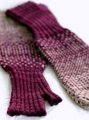

|
||
Premium Patterns Wintry Mix Mitts Love Bytes HawkeyeFree Patterns Kiddie Cadet Summerlin Ruffled Scarf Seamless DS Sock Simply Seamless Pouch Myriads of MushroomsExtras DIY Mitten Blocker Felt Patch Tutorial Yarn Dyeing Tutorial Needle Pouches Knitting Journal |
March 03, 2010 - Posted by Grace SchneblyTransitionsProject Specs I know this is like blasphemy posting something that isn't made out of Malabrigo during Malabrigo March, but I still have a few knits from the Ravelympics that I haven't posted yet. These mittens had been in my queue for SO long now. I remember when I first started knitting that these were on my to-knit list for when I got a bit more experienced. Well they got put off for a little longer than I was expecting but I'm so happy that I finally got around to them and just in time for spring! This pattern is pretty simple but took it me longer than I was hoping. I'm so very slow at knitting ribbing; it is just painful. The colorwork pattern is easy enough and really does fly by, at least compared to the ribbing. To make sure that each stitch shows up in the end, pay attention to yarn dominance. I knit them so that CC was dominant until Row 45 when I switched to MC to be dominant. In the end I think the transition ended up nice and smooth, although I'd love to try these again with two colors that are more similar to get a blended transition. I opted to make the palm section a little longer than suggested in the pattern and ended up needing to dip into a second skein to finish up the last 3 or 4 rows. Fortunately I had an extra skein on hand but be careful if you decide to knit the Medium/Large size and add any length. I think this pattern is written to take exactly one skein of the CC color, however if you're knitting the smaller size you should have no problem. You could also swap the MC and CC colors for the second glove and you wouldn't have to worry about running out of yarn. I ran into just one problem with the pattern. I have the actual printed out pamphlet so this might be fixed in newer versions. When you're setting up your stitches for the thumb gusset, the pattern tells you to place a marker after 13 sts for left hand and 41 sts for right hand. Once you start ribbing the two stitches after the maker are supposed to be purl stitches, but they're not. To make sure your thumb is positioned correctly place your maker after 11 sts for the left hand and 43 sts for the right. Shibui Sock was a real pleasure to work with. The colors are vibrant and it's nice and soft. Since it was superwash I was able to swish it around a little more vigorously that I usually would which helped even out the stitches a bit more. I have noticed that some parts are already starting to fuzz out a bit so I hope that it can hold up to wearing although it should be fine for arm warmers. Malabrigo Sock would make a good substitution to this yarn, in case you're looking for a mitt pattern to add to your Malabrigo Mach roster! As for my Malabrigo March projects, I've already started on a baby sized Duck Soup in Pollen. I'm already loving it and hope to finish it up today. Alice has been working on an adorable pair of Robot Mittens that she's almost finished with too! I've also been working on my entries for the Badges & Banners contest in the Junkies Ravelry group. Each stitch is a different Malabrigo colorway! If you're interested in checking out all of the different Mal March festivities, head on over to the Malabrigo Junkies group on Ravelry. There are so many participants and I can't wait to see all of the projects roll in! |
   Recent ReviewsRecent Posts
 Our Favorites
|
| © 2007 KathrynIvy.com | ||
{kind=link}
{kind=link}
{kind=link}
{kind=link}